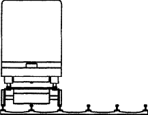

The author searches for sponsors of the project!
MTRW - automatic, electric, rail transport. Unlimited possibilities and affordable solutions!
Automobile traffic can not be automated.
Vehicle with visual path control
and traffic conditions - this is a deadly device.
In Russia, road accidents die every year
30’000 people and injured another 300’000...
Multi-rail roads with a tram-crossing train -
is a real solution for automating the transport system.
Rail is the only possible solution for long-term transport.
Automation, rail, electricity - only these components
will allow to integrate transport and architecture...
Automation of traffic is necessary and possible!
Appeal to investors, to all not indifferent or injured in a traffic accidents
Let’s save the life of Russians, full of energy, vitality, creative plans - but inexorable statistics sentenced this year, and the next to die in a road accident under the wheels of vehicles in subsequent years. In Russia, automobile milk annually devours 30 thousand in the majority of its young souls and 300 thousand more people maim and injure. Road transport is the most dangerous transport of all existing. Because of the huge size, the large number of climatic zones - never in Russia will there be good roads, serviceable, equipped and safe. Never in Russia will there be good cars, and precisely because it will not have good roads. Good roads and good cars are for small, well-off and well-groomed countries.
Despite the growth in the number of cars due to the imported auto-car, life in the country remains along the railways and only the rail can be the basis of long-term transport. A car is a dangerous anachronism, which should go away in the past, like wood heating. The place of the car is off-road and construction machinery. The project to automate the car to the level of unmanned vehicles is an obvious utopia because of its enormous complexity, and there are simple ways to "deceive" an unmanned vehicle already now. As a consequence - there is no safe car and it can not, the car has no future.
The car has an effective replacement.
Land transport of the future is rail transport, or rather, transport on the basis of multi-rail railways (MRL). Multi-rail roads are rail vehicles that can go around, overtake, turn around, park. Only by grabbing the rail you can safely navigate at high speeds and create a single universal transport for movement on the surface of the earth, above the ground, under the earth, and under water. Only the rail can eliminate the contradiction between speed and safety.
Multi-rail railways is a universal, elegant in simplicity and elegant in form, powerful in terms of the number of tasks to be solved, science-intensive, resonant in effect, cosmic-scale solution of transport problems.
Multi-rail roads will become the basis for unmanned automatic ground, underground and underwater transport, including personal and individual. Rail transport is many times easier to automate than automobile. Automatic rail transport has long existed in many countries and is developing rapidly.
Multi-rail roads are transport, the roads for which will become eternal at all latitudes, and will be built, serviced and repaired automatically. This transport will, without removing slippers, directly from the apartment to reach anywhere in the world, in an automatic mode, transport passengers, goods, goods, products, deliver doctors to patients, patients to hospitals, children to school and back home.
Multi-rail roads - a transport continuation of the Internet and cellular communications. This transport will divide the city and rationally distribute the population, make it mobile and free. Cities will cease to have an ugly appearance of the arranged houses-boxes with car-clogged passages, where people-adults and children-go, alternating with moving vehicles, without any security guarantees. The architecture will be transformed, and transport will become its integral penetrating part, like electricity, heating, water, communications, sewerage. Multi-rail transport will be the blood system of the country and the planet, and there is no other transport that could become his alternative.
The decision was positively evaluated by the representatives of the Leningrad design pool, who at one time designed nuclear submarines and the high-speed train "Sokol".
Multi-rail roads are the solution first of all for Russia, and in Russia there are everything for the project: engineers, metal, energy and demand.
Open the door to the future and the world will not forget you. Someone must do it and definitely do it!
Hello! My name is Alexander Saveliev.
I am absolutely sure of the necessity and the possibility of creating an automatic transport system - safe, eco-friendly, generally accessible, self-building and self-controlling, which will drive out dangerous road transport from the cities, and connect the city with each other.

Developments in the field of creation of unmanned automatic transport systems are being carried out in many countries of the world. These systems are called "Personal automatic transport", denoted by the letters PRT (Personal Rapid Transit). Some projects have already been implemented, such as PRT of Heathrow Airport, PRT of Morgantown University, PRT of Mosdar City. More projects not implemented. All these systems have a predetermined trajectory (rail, chute, rope) and have a fatal flaw - the inability to travel around the obstacle. This shortcoming doesomed the previously known projects of an automatic transport system to a limited "laboratory" application.
In such a huge country as Russia, an automatic transport system is a necessary condition for the development of the country, rational use of its territory and resources, a condition for its security and defense capability.
I’m looking for like-minded people and sponsors for the implementation of the project of an automatic transport system based on the multi-track railway (MTRW). The multi-track system consists of a railroad with rail lines laid at the same distance, and trains capable of stepping from the rail to the rail, changing the path at any point in the traffic.
Such a design allows rail vehicles to avoid obstacles, eliminates its main drawback, and, thereby, opens up the broadest prospects for the implementation of an automatic transport system for the long term.
Undoubtedly, this type of transport offers us absolutely unlimited possibilities and very affordable solutions! This is the transport of the future! And how far or near depends on us.
Together with you, we will be able to make the world around us better and more perfect! In the meantime, time is working against us...